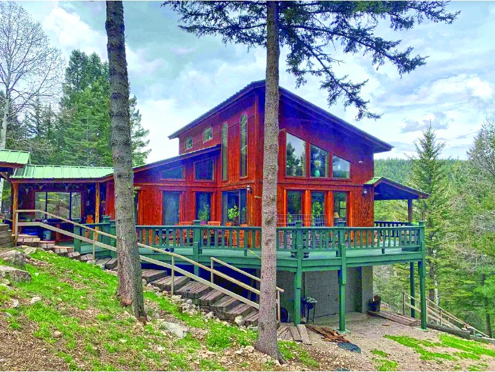
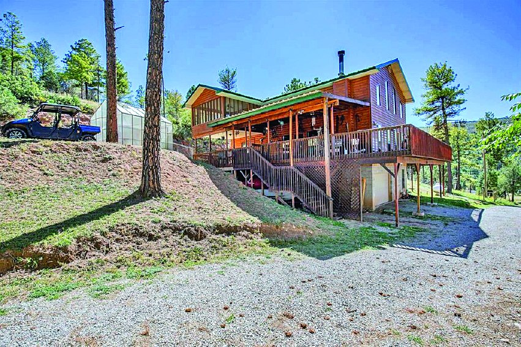
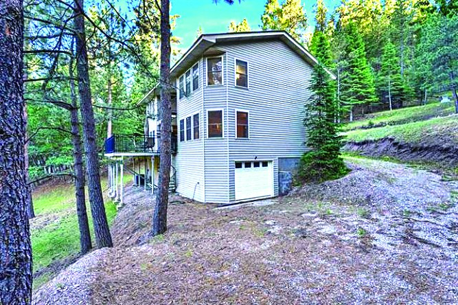
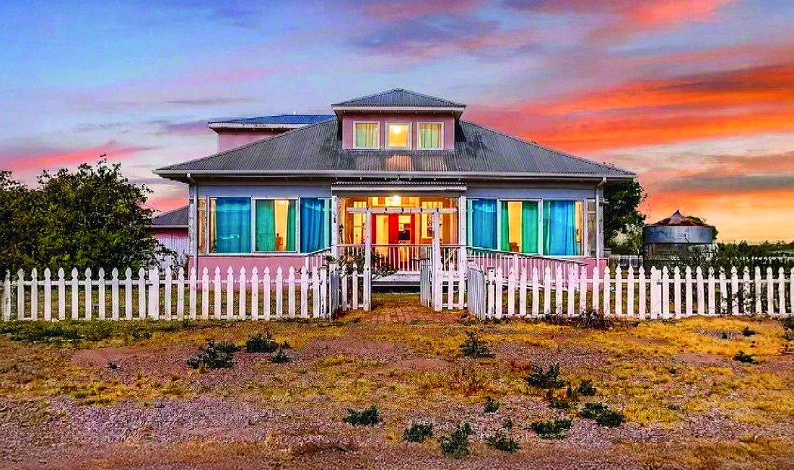

$789,000
3 Bedroom 1.66 Acre Property in Cloudcroft
3 bd · 2 ba · 1.66 acres
Cloudcroft, New Mexico
MLS #172629
$789,000
3 Bedroom 1.66 Acre Property in Cloudcroft
3 bd · 2 ba · 1.66 acres
Cloudcroft, New Mexico
MLS #172629

New Listing
4 Bedroom Property
$784,500
| Price | $784,500 |
|---|---|
| Status | New Listing |
| Bedrooms | 4 |
| Bathrooms | 2 |
| Living area | 2,220 sq ft |
| MLS # | 172108 |
| Print edition | October 2026 Otero County Edition, page 3 |
About this property
Beautiful Mountain Retreat on 7.85 private, forested acres w/tall pines, aspens, wildlife & total tranquility. 2,220 sq ft single‑level custom home w/4 bdrms, 2 baths, & loft overlooking living area. Warm wood interiors, beams, handcrafted details, & abundant windows create a rustic, artistic atmosphere. Expansive mostly covered decks capture sweeping canyon views. Updated kitchen features granite counters, custom cabinets & modern farm sink. Double carport, tandem garage/storage, gated entry & home is hidden from the road. Excellent for horseback riding & ATVs w/direct access to National Forest trails. Additional storage & workshop space under house.
Interested in this property?
Christine Barry ®
Phone: 575-921-1577
Email: christinebarry007@gmail.com
Please contact the listing agent or company directly. The Real Estate Roundup is a publisher and does not show or sell properties.
Listing details and photo reproduced from the October 2026 print edition of The Real Estate Roundup (page 3), as printed. Prices and availability can change after publication — confirm with the listing agent.
More Homes
$789,000
3 Bedroom 1.66 Acre Property in Cloudcroft
3 bd · 2 ba · 1.66 acres
Cloudcroft, New Mexico
MLS #172629
 $759,500
4 Bedroom Property in Cloudcroft
4 bd · 2 ba · 900 sq ft
Cloudcroft, New Mexico
MLS #172956
$759,500
4 Bedroom Property in Cloudcroft
4 bd · 2 ba · 900 sq ft
Cloudcroft, New Mexico
MLS #172956

$749,000 2979 US HWy 82 Mayhill Mayhill, New Mexico MLS #172698
$730,000 15 Plug Nickle Rd 1.5 acres MLS #172768 $729,000
Property in Cloudcroft
Cloudcroft, New Mexico
MLS #173079
$729,000
Property in Cloudcroft
Cloudcroft, New Mexico
MLS #173079

$699,900 1401 Higuera Avenue, Tularosa, NM 3,491 sq ft · 46.0 acres Tularosa, New Mexico